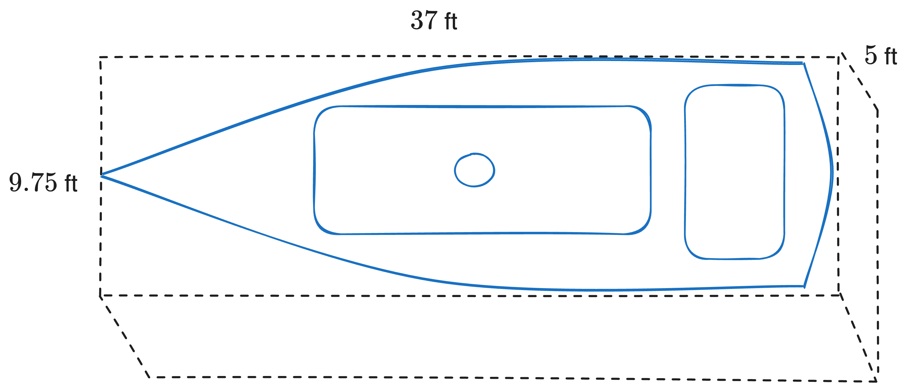
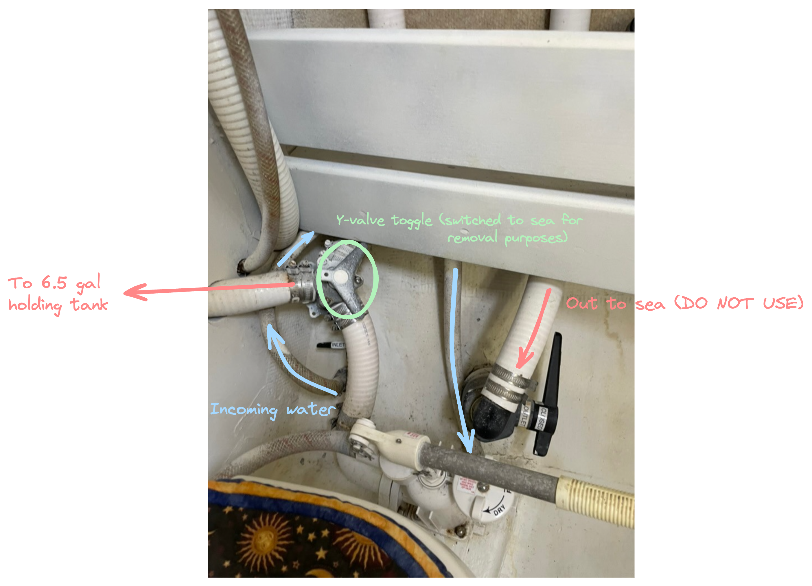
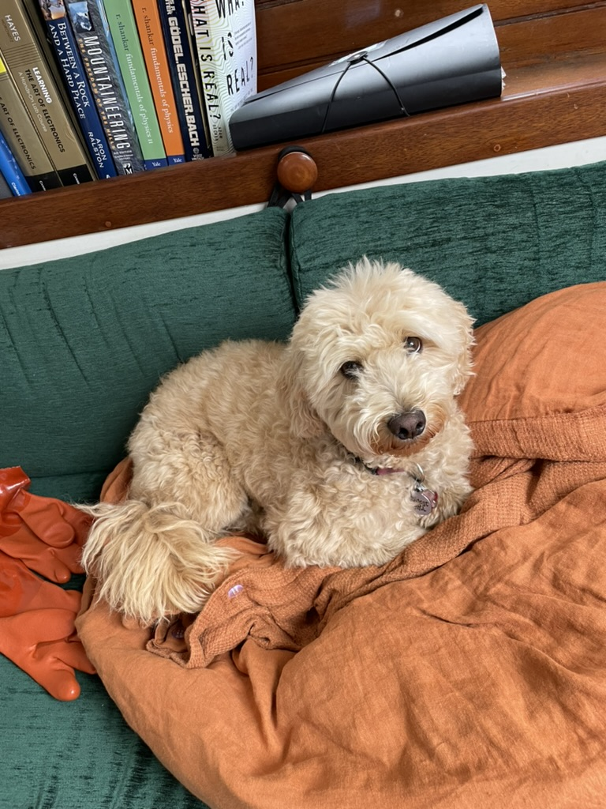
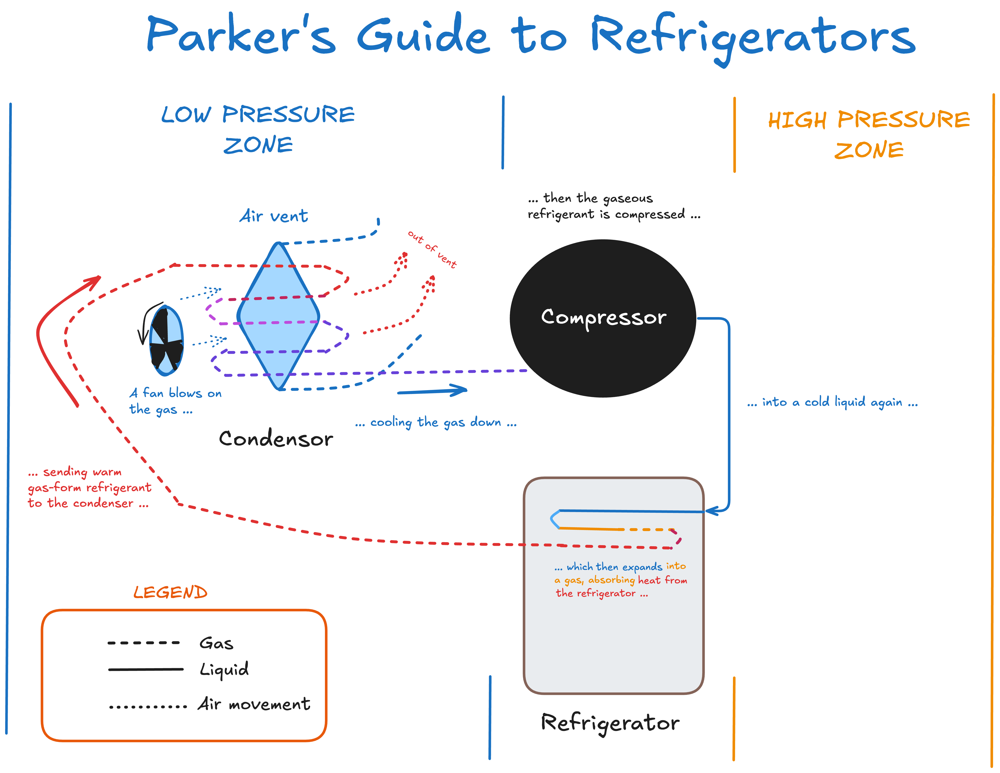

Log of the Endurance
Call me Parker.
Some months ago - never mind how long precisely - having little or no money in my purse, and nothing in particular to interest me on shore, I thought I would sail about a little and see the watery part of the world.
It is a way I have of driving off the spleen, and regulating the circulation.
Thus, the Endurance.

The Endurance is a 37' sloop designed by Bill Buchan Sr. and John Buchan in the 1960s in Olympia, WA as a bluewater cruiser, first assembled in 1975. I bought it in August 2024 as a liveaboard as I finish my undergraduate degree at the University of Washington.
I know not all that may be coming, but be it what it will, I'll go to it laughing.
The Grand TODO
Everything that needs doing as of 10/7/2024.
Interior
- Clean the interior of of mold [9/24/24 - Mold]
- Remove the old head and 6.5 gal holding tank [9/28/24 - Removing the Head]
- Install a (larger) holding tank and redo head with an electric toilet
- Add dorade vents + cowls
- Diagnose refrigerator issues
- Replace bedding with fresh cushions + sheets
- Redo interior lighting, removing some of the old fluorescents
- Modify old brass kerosene lamps to become electric
- Touch up some interior paint
- Install drop-down trashcan
Exterior
- Clean the mainsail
- Install roller furling on jib
- Replace rigging lines
- Bottom cleaning + a fresh coat of bottom paint
- Clean and polish old exterior teak + deck
- Fix and fill in some small cracks on the fiberglass
- Add ship's name to bow
9/24/24 - Mold
“...to the last I grapple with thee; from hell's heart I stab at thee; for hate's sake I spit my last breath at thee.”
Herman Melville, "Moby Dick"
When I first bought the Endurance a few months ago, the previous owner mentioned she'd been sitting in her berth for a year without interacting with her much. I, being utterly inexperienced, didn't think much of it at the time. Unfortunately, it turns out that a year in a berth in the PNW with no ventilation means something that's a bogeyman to most sailors: mold.

After seeing some for the first time, I ran around the ship in a panic looking for more. Fortunately, the living spaces didn't have much; mostly it was restricted to the head (open water, no ventilation), under the sink (leaky pipe), in the rear two berths I'm using for storage (exposed passive vent) and beneath the old fresh water heater. There was very mild mildew growth in the V-berth and elsewhere in the living quarters.
Regarding Mold
Mold and mildew are fungi - eukaryotic organisms that tend to spread through airborne spores.
Apparently, one way that fungi can distinguished from other eukaryotic organisms (like bacteria, plants and animals) by the presence of chitin in their cell walls.
According to this study, mold needs three things to grow:
- Wet: relative humidity above 60%.
- Low light levels: intense UV can kill mold, so it's difficult to grow outside unless it's got an easy food source. Even on nutritionally sparse interiors, varieties can grow if uninhibited by UV.
- Still air: for the spores to take root and grow.
Removal of any of these three means we make a hostile environment for mold. Right.
Fungicide
First step: getting rid of what's already present.
Concrobium, bleach and vinegar all work against heavy concentrations of mold - but they're much better for small-yet-intense areas, like under my water heater. I wanted to make sure most of the mold on my entire boat was gone, so I used concrobium for areas of visible mold, then used an ozone generator.
Ozone has been scientifically tested against a wide variety of molds, and found to be effective at killing it (including black mold!) - but only at high concentrations. Specifically, an ozone concentration of 35 ppm. Let's do some math to find out how to practically generate that much.
The Endurnace has an LoA of 37 feet, a beam of 9.75 feet and interior height of maybe 5 feet.

If we approximate the Endurance as just a box, that's an interior volume of 1803 cubic feet. Now, Endurance is sailboat-shaped, not box-shaped, so maybe shave off 1/3 of that number, for an (approximate) interior volume of 1200 cubic feet.
My ozone generator disperses 15,000 mg/hr. I want a concentration of 35 ppm ozone1 to inactivate all the mold air can reach. 1 g of ozone per cubic meter is equivalently 467 ppm ozone in the air.
Ideal case has no air movement into or out of the boat and the ozone is stable. After 1 hour I'll have 15 grams of ozone. 1200 cubic feet is about 34 cubic meters, so after 1 hour of running my machine I'll have 0.44 g / m ozone, assuming the ozone disperses throughout the whole boat, or 205.48 ppm ozone. That's the ideal case - in reality, I'll allow for 2/3 of the ozone to escape the boat through passive vents and air holes, leaving 68.49 ppm after 1 hour. But I wanted over-kill, so ran the ozone generator for an extra thirty minutes.
Everything should be dead now - so time to prevent future growth.
https://www.tandfonline.com/doi/abs/10.1080/01919510903043996
Mold Prevention
The Endurance doesn't have good ventilation when she's closed up (yet). I have two small passive cowl vents, one at the front, the other at the rear, and a decaying solar mushroom vent. So, lots of still air ... collecting condensation ... means she's the perfect environment for mold on a wet day, which happens often here.
So I need ventilation. But that'll take time and parts - for now, I've killed off the local mold population, so I need a temporary solution until then.
First - I got a dehumidifer to keep the interior air at 45% humidity until I can get some active ventilation set up. Next, I grabbed some borax, TSP and washing soda from the hardware store to make something called formula B.
Formula B:
- 1 gallon of warm water
- 1/4 cup borax
- 2 tablespoons of TSP
- 2 tablespoons of washing soda
Mix in a bucket then spray with a spray-bottle. Scrub in with a brush and let sit for a bit, then remove any residue with a shop-vac.
The key here is the borax - it's toxic to mold but not to humans. Trace amounts of it will remain on the surface it was sprayed on, and can be used on pretty much every surface (though maybe not on beds), so mold shouldn't grow on that surface for a long while, even given ideal conditions. I sprayed this on most carpeted and hardwood surfaces, especially where mold had grown previously, then rubbed it in with a brush, removing the excess with a little shop-vac I had on hand.
Over the next few days I'll get ventilation set up and start attacking the ancient (and stinky) bathroom.
9/28/24 - Removing the head
"The Pequod’s whale being decapitated and the body stripped, the head was hoisted against the ship’s side- about half way out of the sea, so that it might yet in great part be buoyed up by its native element".
Herman Melville, "Moby Dick"
The Endurance has a small head just aft of the v-berth cabin. It's a simple and easy setup: water is pumped in from the sea into a toilet, business done, then the waste is flushed out into either a blackwater storage tank or into the ocean itself.

Simple - except ... Endurance's head was old. Old, and therefore stinky. On the shore, water is usually lightly treated in such a way that bacteria can't grow in it. It's why tapwater, despite being stuck in pipes for a while, is safe to drink and standing toilet water doesn't stink. Seawater both isn't treated and has tons of lil baby microorganisms making everything stink up - especially when they're stuck in a toilet bowl. Marine heads (and their tubing) don't usually have terribly long lives - only a couple years before an overhaul is needed.
To further complicate matters, Endurance's holding tank was only 6.5 gallons.
Time to strip it all out and replace it.
Four hours later ... it's done. We threw on some loud music to power through the stink & got it all out, though our olfactory senses may never recover from the ordeal.
Gross, gross, GROSS. Ugh.
 Farewell, old PHII and world's smallest holding tank. I'm thinking now I'll replace them with an electric toilet - first-world solutions to a not-so-first-world problem.
Farewell, old PHII and world's smallest holding tank. I'm thinking now I'll replace them with an electric toilet - first-world solutions to a not-so-first-world problem.

And Roxanne, the (unofficial, part-time) ship's hound.

10/4/24 - Refrigerator troubles
"... upon which Jonah mixed him a pitch-like potion of gin and molasses, which he swore was a sovereign cure for all colds ..."
Herman Melville, Moby Dick
The refrigerator on Endurance doesn't work. Let's figure out why. Most marine refrigerators are, interestingly, quite similar to car AC systems, which I made a quick and dirty diagram to below.
